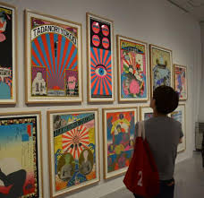
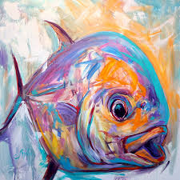
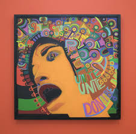
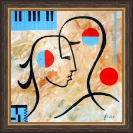

Modernism
Modernism is both a philosophical movement and an art movement that, along with cultural trends and changes,...
Contemporary Art

Contemporary art is the art of today, produced in the second half of the 20th century or in the 21st century. Contemporary artists work in a globally influenced, culturally diverse, and technologically advancing world. Their art is a dynamic combination of materials, methods, concepts, and subjects that continue the challenging of boundaries that was already well underway in the 20th century. Diverse and eclectic, contemporary art as a whole is distinguished by the very lack of a uniform, organising principle, ideology, or "-ism". Contemporary art is part of a cultural dialogue that concerns larger contextual frameworks such as personal and cultural identity, family, community, and nationality.
In vernacular English, modern and contemporary are synonyms, resulting in some conflation of the terms modern art and contemporary art by non-specialists.
Jeff Koons, Balloon Dog (Yellow), 1994–2000, mirror-polished stainless steel with transparent color coating, 121 x 143 x 45 in. (307.3 x 363.2 x 114.3 cm). Metropolitan Museum of Art, Private collection
Some define contemporary art as art produced within "our lifetime," recognising that lifetimes and life spans vary. However, there is a recognition that this generic definition is subject to specialized limitations.[2]
The classification of "contemporary art" as a special type of art, rather than a general adjectival phrase, goes back to the beginnings of Modernism in the English-speaking world. In London, the Contemporary Art Society was founded in 1910 by the critic Roger Fry and others, as a private society for buying works of art to place in public museums.[3] A number of other institutions using the term were founded in the 1930s, such as in 1938 the Contemporary Art Society of Adelaide, Australia,[4] and an increasing number after 1945.[5] Many, like the Institute of Contemporary Art, Boston changed their names from ones using "Modern art" in this period, as Modernism became defined as a historical art movement, and much "modern" art ceased to be "contemporary". The definition of what is contemporary is naturally always on the move, anchored in the present with a start date that moves forward, and the works the Contemporary Art Society bought in 1910 could no longer be described as contemporary.
Charles Thomson. Sir Nicholas Serota Makes an Acquisitions Decision, 2000, Stuckism
Particular points that have been seen as marking a change in art styles include the end of World War II and the 1960s. There has perhaps been a lack of natural break points since the 1960s, and definitions of what constitutes "contemporary art" in the 2010s vary, and are mostly imprecise. Art from the past 20 years is very likely to be included, and definitions often include art going back to about 1970;[6] "the art of the late 20th and early 21st century";[7] "the art of the late 20th cent. and early 21st cent., both an outgrowth and a rejection of modern art";[8] "Strictly speaking, the term "contemporary art" refers to art made and produced by artists living today";[9] "Art from the 1960s or [19]70s up until this very minute";[10] and sometimes further, especially in museum contexts, as museums which form a permanent collection of contemporary art inevitably find this aging. Many use the formulation "Modern and Contemporary Art", which avoids this problem.[11] Smaller commercial galleries, magazines and other sources may use stricter definitions, perhaps restricting the "contemporary" to work from 2000 onwards. Artists who are still productive after a long career, and ongoing art movements, may present a particular issue; galleries and critics are often reluctant to divide their work between the contemporary and non-contemporary.[citation needed]
Sociologist Nathalie Heinich draws a distinction between modern and contemporary art, describing them as two different paradigms which partially overlap historically. She found that while "modern art" challenges the conventions of representation, "contemporary art" challenges the very notion of an artwork.[12] She regards Duchamp's Fountain (which was made in the 1910s in the midst of the triumph of modern art) as the starting point of contemporary art, which gained momentum after World War II with Gutai's performances, Yves Klein's monochromes and Rauschenberg's Erased de Kooning Drawing.[13]
Themes
Irbid, Jordan, "We are Arabs. We are Humans"
Irbid, Jordan, "We are Arabs. We are Humans". Inside Out is a global participatory art project, initiated by the French photographer JR, an example of Street art
One of the difficulties many people have in approaching contemporary artwork is its diversity—diversity of material, form, subject matter, and even time periods. It is "distinguished by the very lack of a uniform organizing principle, ideology, or -ism"[14] that we so often see in other, and oftentimes more familiar, art periods and movements. Broadly speaking, we see Modernism as looking at modernist principles—the focus of the work is self-referential, investigating its own materials (investigations of line, shape, color, form). Likewise, Impressionism looks at our perception of a moment through light and color as opposed to attempts at stark realism (Realism, too, is an artistic movement). Contemporary art, on the other hand, does not have one, single objective or point of view. Its view instead is unclear, perhaps reflective of the world today. It can be, therefore, contradictory, confusing, and open-ended. There are, however, a number of common themes that have appeared in contemporary works. While these are not exhaustive, notable themes include: identity politics, the body, globalization and migration, technology, contemporary society and culture, time and memory, and institutional and political critique.[15] Post-modern, post-structuralist, feminist, and Marxist theory have played important roles in the development of contemporary theories of art.
Institutions
This section needs additional citations for verification. Please help improve this article by adding citations to reliable sources. Unsourced material may be challenged and removed.
Find sources: "Contemporary art" – news · newspapers · books · scholar · 
The Château de Montsoreau-Museum of Contemporary Art (France), is a private institution belonging to Philippe Méaille.
The Museum of Contemporary Art in Miami, Florida.
The functioning of the art world is dependent on art institutions, ranging from major museums to private galleries, non-profit spaces, art schools and publishers, and the practices of individual artists, curators, writers, collectors, and philanthropists. A major division in the art world is between the for-profit and non-profit sectors, although in recent years the boundaries between for-profit private and non-profit public institutions have become increasingly blurred.[citation needed] Most well-known contemporary art is exhibited by professional artists at commercial contemporary art galleries, by private collectors, art auctions, corporations, publicly funded arts organizations, contemporary art museums or by artists themselves in artist-run spaces.[16] Contemporary artists are supported by grants, awards, and prizes as well as by direct sales of their work. Career artists train at art school or emerge from other fields.[citation needed]
There are close relationships between publicly funded contemporary art organizations and the commercial sector. For instance, in 2005 the book Understanding International Art Markets and Management reported that in Britain a handful of dealers represented the artists featured in leading publicly funded contemporary art museums.[17]
Corporations have also integrated themselves into the contemporary art world, exhibiting contemporary art within their premises, organizing and sponsoring contemporary art awards, and building up extensive corporate collections.[18] Corporate advertisers frequently use the prestige associated with contemporary art and coolhunting to draw the attention of consumers to luxury goods.[citation needed]
The institutions of art have been criticized for regulating what is designated as contemporary art.
Outsider art, for instance, is literally contemporary art, in that it is produced in the present day. However, one critic has argued it is not considered so because the artists are self-taught and are thus assumed to be working outside of an art historical context.[19] Craft activities, such as textile design, are also excluded from the realm of contemporary art, despite large audiences for exhibitions.[20] Art critic Peter Timms has said that attention is drawn to the way that craft objects must subscribe to particular values in order to be admitted to the realm of contemporary art. "A ceramic object that is intended as a subversive comment on the nature of beauty is more likely to fit the definition of contemporary art than one that is simply beautiful."[21]
At any one time a particular place or group of artists can have a strong influence on subsequent contemporary art. For instance, The Ferus Gallery was a commercial gallery in Los Angeles and re-invigorated the Californian contemporary art scene in the late fifties and the sixties.
Postmodernism
Postmodernism is a body of art movements that sought to contradict some aspects of modernism or some...
Expressionism
Expressionism is a modernist movement, initially in poetry and painting, originating in Germany at the beginning of the...
Surrealism
Surrealism is a cultural movement that began in the early 1920s, and is best known for its visual artworks and writings.
Abstract Art
Abstract Art uses visual language of shape, form, color and line to create a composition which may exist with a degree of...